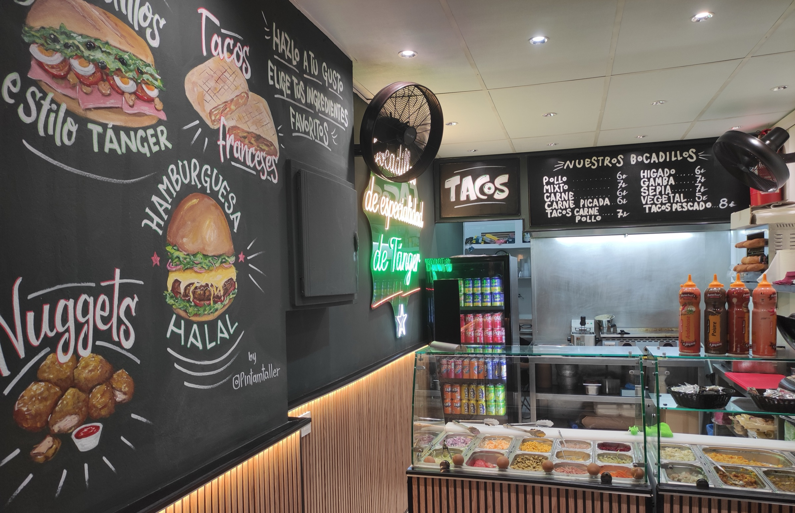

Bocadillo

Bocadillo A40 de Tánger
Comida callejera de Tánger · Halal · Carrer del Rector Coch, 1-3
مرحبا
Pasa,
estás en Tánger.
Desliza para entrar
Tánger × Lloret
En Tánger el bocadillo se come en la calle: barra abierta, relleno generoso, salsa y a seguir paseando por la medina. Aquí, igual.
- حلالTodo halal
- 5,08 reseñas en Google
- 12–24 hmartes a domingo
- Al momentofrescos y generosos
La carta
Enciende un farol.
Ocho faroles de latón, ocho partes de la carta. Toca uno y su luz te enseña lo que hay. Si pasas por debajo, se balancean.
¡Añade más! Patatas fritas + bebida: +3 €Tánger y España en cada bocado · Sabor que une culturas
Haz tu pedido por WhatsApp 601 86 48 97Precios de la carta del local · IVA incluido.
Del mostrador al pan
Monta tu bocadillo.
Elige uno y mira cómo se monta: cada ingrediente sale de su bandeja del mostrador, como en el local. Y si lo quieres estilo Tánger, añade tus extras favoritos.
1 · Elige bocadillo
2 · El mostrador · toca las bandejas con + para añadir extras
El zoco
Colgado en el zoco.
El local, de la puerta al mostrador, tendido como las alfombras de la medina. Arrastra el cordel.
Asómate
Se abren las contraventanas.
5,08 reseñas en Google
Cómo llegar
Un poco escondido, muy cerca.
Carrer del Rector Coch, 1-317310 Lloret de Mar
Horario
- Lcerrado
- M12–24
- X12–24
- J12–24
- V12–24
- S12–24
- D12–24
- Pedidos601 86 48 97
- Local631 87 84 22